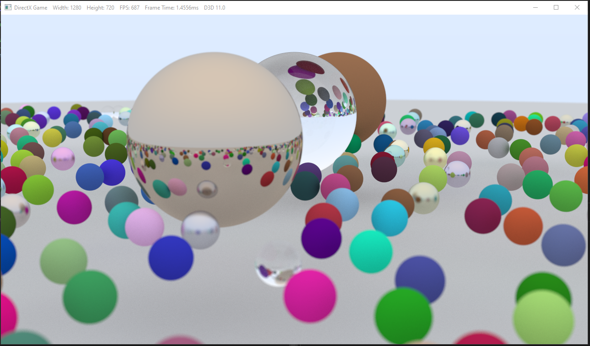

I followed the raytracing in a weekend guide but I implemented it using the DirectX Math libraries. Most of the ray related math I followed directly from the guide however I did make a few important deviations. This guide went over how to raytrace spheres with reflectiveness (ranging from diffuse to mirror/metal), and refractiveness.
This image has 500 rays per pixel and 15 bounces per ray
The first deviation is that the texture is displayed using DirectX instead of saving it to a file. I also have the image process 5 pixels per frame so that you can watch the progress of the image, because it is very very slow to do this on the CPU. Especially for high fidelity images.
The second important deviation is how I generate the rays from the camera. I still use things like random locations on the pixel for anit-aliasing and a camera lens radius for depth of field. The difference is that I generate the rays uses an inverted WVP matrix taken from my old “camera” class to turn camera coordinates into rays.